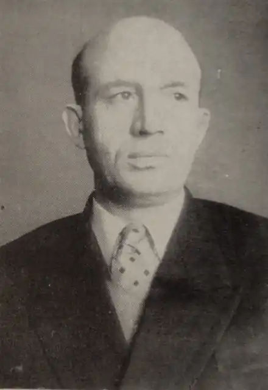

Григол Абашидзе
(1914 — 1994)
Радянський грузинський поет і письменник. Співавтор тексту Гімну Грузинської РСР (1944). Герой Соціалістичної Праці (1974). Лауреат Сталінської премії другого ступеня (1951). Член ВКП(б) з 1944 року. Перший секретар Правління СП Грузії з 1967 року. Академік Академії наук Грузинської РСР (1979). Депутат Ради Національностей Верховної Ради СРСР 8-11 скликань від Зестафонського виборчого округу № 175 Грузинської РСР. Григол Абашидзе народився 19 липня (1 серпня) 1914 року в р. Чиатуры. У 1931 році закінчив середню школу у Тбілісі. У 1936 році закінчив філологічний факультет Тбіліського державного університету імені В. В. Сталіна. Друкуватися почав у 1934 році.Герой поезії Абашидзе — грузинський людина—трудівник ("Вічно в обладунках" (1938), "Основоположник" (1939)). Майстерність Абашидзе зміцніло в роки Великої Вітчизняної війни ("Вороги" (1941), "Поєдинок танків" (1941), "Прапори", (1943), поема "Непереможний Кавказ" (1943)).У циклах віршів "На південному кордоні" (1949) та "Ленін у Самгорі" (1950) Абашидзе розкривав силу патріотизму. У поемі "Георгій шостий" (1942) показана боротьба грузинського народу за національну незалежність.Автор драматичних поем "Легенда про перших тбілісців" (1959) і "Подорож у три часу" (1961), історичних романів з життя Грузії XIII ст. (1-я книга, 1957 — "Лашарела", 2-я — "Довга ніч", 3-я — "україна і цотне, або падіння і піднесення грузин"). Писав і для дітей. Його твори перекладені на французьку, англійську, російську, українську і інші мови. Абашидзе перевів на грузинську мову поезію Ш. Петефі, Міцкевича А., П. Неруди, М. Емінеску, В. Вазова, Х. Ботева. автор (спільно з А. В. Абашели) тексту Державного гімну Грузинської РСР.Працював у 1941-1942 роках відповідальним секретарем журналу "Мнатоби", в 1944-1950 — відповідальним редактором гумористичного журналу "Нианги", а також журналу "Дроша".Р. Р. Абашидзе помер 29 липня 1994 року в Тбілісі. Похований у Дидубийском пантеоні письменників і громадських діячів.